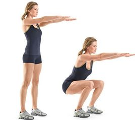

深蹲
深蹲是一种体育锻炼方式，深蹲的标准，腰背保持直线，髋关节低于膝关节。不正确的技术动作反而会使膝关节受损。
众所周知，深蹲是练大腿肌肉的王牌动作。而深蹲恰好是最需要大肺活量和强健心脏的动作。另外坚持做还会起到减肥的作用。
在力量练习中，深蹲是个复合的、全身性的练习动作，它可以训练到大腿、臀部、大腿后肌，同时可以增强骨头、韧带和横贯下半身的肌腱。
深蹲被认为是增长腿部和臀部力量和围度，以及发展核心力量（core strength）必不可少的练习。
在等长收缩中，在以正确的方式深蹲时，下背部、上背部、腹部、躯干肌肉，以及肋间肌肉，以及肩部和手臂对于这个练习都是必不可少的。

负重深蹲
“负重深蹲”是健美运动中最复杂，练习部位较多，是力量举比赛的一个规定动作。
“负重深蹲”对整个下肢和躯干都有强烈的刺激，能锻炼股四头肌（股直肌、股中肌、股外侧肌、股内侧肌）、臀大肌、股二头肌、半腱肌、半膜肌。
此外，“负重深蹲”对心肺功能、神经调节及激素分泌等一系列生理生化反应都有积极的影响，所以练“负重深蹲”可以说是职业选手及业余健美爱好者的必修课。
“杠铃深蹲”属于“负重深蹲”。杠铃深蹲练习是发达下肢肌肉的基本动作之一。
但有些初学者练深蹲后身体却产生不适，如腰背酸痛，颈后出现压痛、红肿等现象，即使肩颈部垫了海绵垫也无济于事。为什么会这样呢？
究其原因，主要是动作不够正确，特别是杠铃放置不恰当所致。杠铃放置不恰当、不稳妥不仅会分散练习的注意力， 影响效果，而且易引起运动损伤。
统计表明，深蹲时因杠铃滑脱，或左右倾斜、摇摆晃动，是导致腰背损伤的重要原因。因为深蹲时杠铃重量大，不易控制。